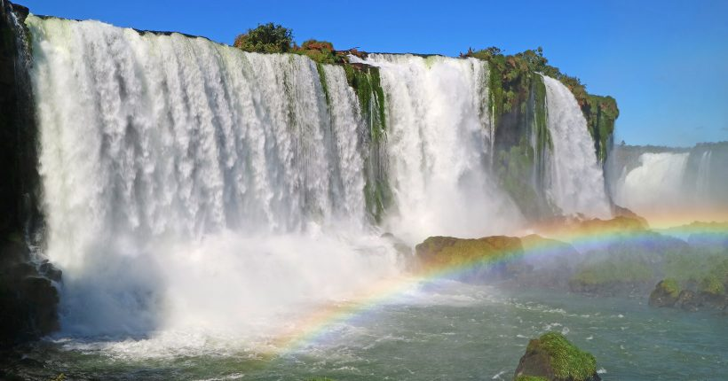
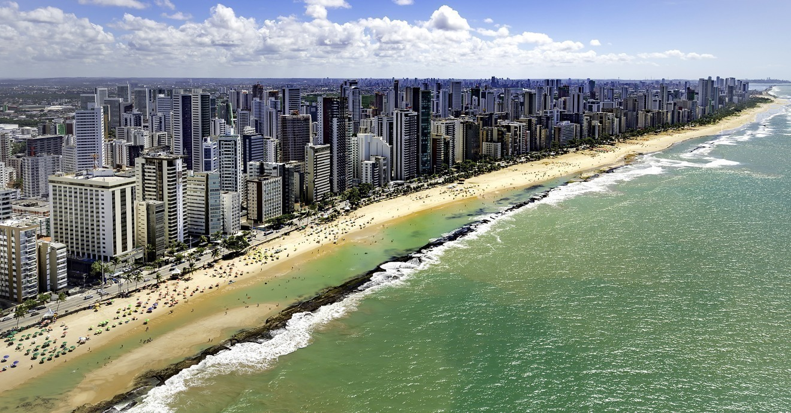

Foz do Iguaçu
Foz do Iguaçu, no Paraná, é famosa pelas Cataratas do Iguaçu, Patrimônio Natural da Humanidade,
e pela Usina Hidrelétrica de Itaipu. Localizada na tríplice fronteira com Argentina e Paraguai,
destaca-se por sua beleza natural e diversidade cultural

Brasília
Brasília, capital do Brasil, foi inaugurada em 1960 e é conhecida por seu planejamento urbano inovador,
projetado por Lúcio Costa, e pela arquitetura modernista de Oscar Niemeyer. Localizada no Distrito Federal,
destaca-se por seus monumentos, como o Congresso Nacional, a Catedral Metropolitana e a Praça dos Três Poderes.
É Patrimônio Mundial da UNESCO.

Recife
Recife, capital de Pernambuco, é conhecida como a "Veneza Brasileira" por seus rios e pontes. Destaca-se por suas praias,
como Boa Viagem, e pelo rico patrimônio histórico em Olinda, cidade vizinha. É famosa pelo Carnaval animado e pela cultura,
com o frevo e o maracatu